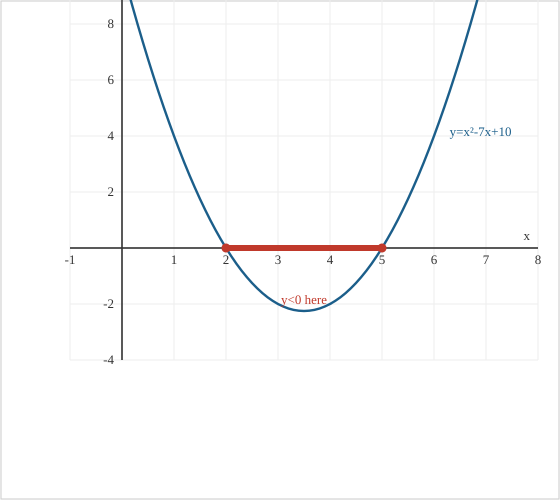

<script>if(location.hostname.endsWith('onrender.com'))location.replace('https://math-sandbox.pages.dev'+location.pathname+location.search+location.hash)</script>
<section class="theory" data-section="P1-1.7">
<h2>1.7 Solving quadratic inequalities</h2>
<p class="src">Based on Cambridge International AS &amp; A Level Mathematics: Pure Mathematics 1 Coursebook (Hugh Neill, Douglas Quadling and Julian Gilbey), Chapter 1 Quadratics, printed pp.21–24 (Key point 1.4, solving by a sketch, and Worked examples 1.15–1.16 style). Printed pages were read from P1.pdf (printed 21–24 = PDF 33–36). Own wording and new numbers.</p>
<p class="key-words"><strong>Key words:</strong> <em>quadratic inequality</em></p>
<h3>From a linear reminder to a quadratic sketch</h3>
<p>If both sides of an inequality are multiplied or divided by a negative number, the inequality sign must be reversed. For a <strong>quadratic inequality</strong> such as \(x^2-7x+10&lt;0\), a reliable method is to factorise (or complete the square, or use the formula) to find the roots of the corresponding equation, sketch the parabola, and read off where the graph is above or below the \(x\)-axis.</p>
<div class="worked-example">
<h4>Worked example 1</h4>
<p class="src">Book: Worked example 1.15 style, printed pp.22–23. New numbers.</p>
<p>Solve \(x^2-7x+10&lt;0\).</p>
<ol class="steps">
<li>\(x^2-7x+10=(x-2)(x-5)\). The roots are \(x=2\) and \(x=5\). <span class="mark">M1</span></li>
<li>The parabola \(y=(x-2)(x-5)\) is a U-shape, so it is below the axis between the roots: \(2&lt;x&lt;5\). <span class="mark">A1</span></li>
</ol>
<p class="final"><strong>Answer:</strong> \(2&lt;x&lt;5\)</p>
</div>
<figure><figcaption>\(y=x^2-7x+10\) is negative between the roots \(2\) and \(5\).</figcaption></figure>
<div class="worked-example">
<h4>Worked example 2</h4>
<p class="src">Book: Worked example 1.16 style, printed p.23. New numbers.</p>
<p>Solve \(x^2+2x\geqslant 15\).</p>
<ol class="steps">
<li>Rearrange: \(x^2+2x-15\geqslant 0\), so \((x+5)(x-3)\geqslant 0\). <span class="mark">M1</span></li>
<li>The U-shaped parabola is on or above the axis outside the roots: \(x\leqslant -5\) or \(x\geqslant 3\). <span class="mark">A1</span></li>
</ol>
<p class="final"><strong>Answer:</strong> \(x\leqslant -5\) or \(x\geqslant 3\)</p>
</div>
<h3>Common mistakes</h3>
<ul>
<li>Reading the sketch the wrong way (taking the interval between the roots when the graph is above the axis, or the other way around).</li>
<li>Multiplying through by a negative quantity, or moving a term, without rearranging to a comparison with zero first.</li>
<li>Using a strict inequality when the original statement included equality, or the reverse.</li>
</ul>
<h3>Quick checks</h3>
<div class="quick-check">
<h4>Quick check 1</h4>
<p>The inequality \((x-2)(x-7)&lt;0\) holds between the roots. What is the larger root?</p>
<details><summary>Worked solution</summary>
<ol class="steps">
<li>The roots are \(2\) and \(7\), so the larger root is \(7\). <span class="mark">A1</span></li>
</ol>
<p class="final"><strong>Answer:</strong> \(7\)</p>
</details>
</div>
<div class="quick-check">
<h4>Quick check 2</h4>
<p>Solve \(x^2-5x+6=0\). What is the smaller root?</p>
<details><summary>Worked solution</summary>
<ol class="steps">
<li>\((x-2)(x-3)=0\), so the smaller root is \(2\). <span class="mark">A1</span></li>
</ol>
<p class="final"><strong>Answer:</strong> \(2\)</p>
</details>
</div>
<div class="quick-check">
<h4>Quick check 3</h4>
<p>How many integers \(x\) satisfy \(1&lt;x&lt;5\)?</p>
<details><summary>Worked solution</summary>
<ol class="steps">
<li>The integers are \(2\), \(3\) and \(4\), so there are \(3\) of them. <span class="mark">A1</span></li>
</ol>
<p class="final"><strong>Answer:</strong> \(3\)</p>
</details>
</div>
<p class="marks-key"><strong>Marks:</strong> M = method, A = accurate answer (depends on M), B = independent mark. Leave exact values exact.</p>
</section>
